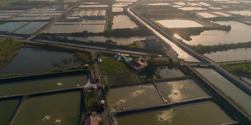
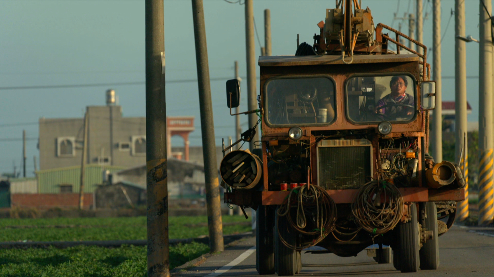

水成井字：地理限制下的求生之路
雲林縣口湖鄉的水井村，位處台灣西海岸最邊陲的地帶。據《臺灣地名辭書（卷九）雲林縣》所載，「水井」之名，係因先人於此地挖井取得淡水，逐漸聚集成村而來。
然而，緊鄰海峽帶來的偏鹹土壤與常年強風，讓這裡極不適合農業發展。為了解決生計，老一輩的水井人拿起了工具，走向全台各地。靠著精湛的「鑿井」技術，他們在缺水的土地上打出一口口生命之泉，也撐起了整個村落的繁華。全盛時期，村裡有一半以上的人口都在從事鑿井業，讓水井村成為了台灣最知名的「鑿井村」。

時代洪流與青黃不接的困境
隨著地下水開發管制的推行與自來水的普及，鑿井業逐漸走向黃昏。那些必須長年離鄉背井、沒日沒夜與泥沙搏鬥的日子，成為了一般人難以理解的艱辛勞動。
曾經熱鬧的村落，因為產業的萎縮，年輕人不得不再次遠走他鄉，前往大城市謀生。如今的水井村，面臨著嚴重的「青黃不接」與人口老化問題。從事鑿井的人口寥寥無幾，那些曾在地下百米開拓水源的歷史記憶，以及刻苦耐勞的職人精神，正面臨失傳的危機。

井衣衛：把故鄉的記憶，穿在身上
面對水井村的困境，「井衣衛」團隊應運而生。我們不忍看見這份充滿生命力的文化記憶就此消逝。因此，我們以「井」為圖騰，以「衣」為鎧甲，決定為這片土地做些什麼。
透過收購廢棄舊衣與剩料，我們將水井村的鑿井符號、農田阡陌與守護信仰，轉化為服飾與生活物件上的刺繡與拼接設計。這不僅是推動永續再生，更為在地的長輩創造了就業機會。我們相信，只要還有人穿著井衣衛，水井村的故事就不會被遺忘；這份土地的記憶，將會跟著每一個步伐，繼續勇敢地走下去。